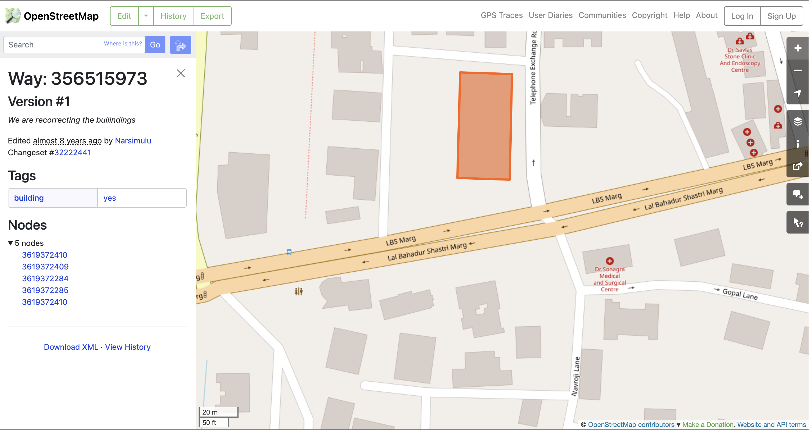
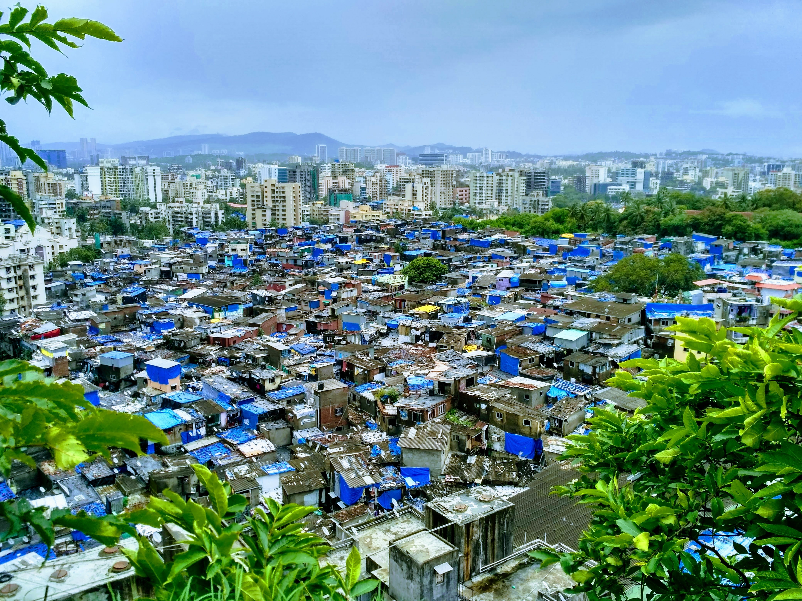

Importance of buildings in urban studies
Buildings and streets, with the occasional punctuation of greenery, define the urban built environment. Our daily trips typically start and end in buildings making them anchors of our activities - from leisure to work to residence. However, streets and roads make a bigger impact as they dictate the efficiency of movement and ultimately, access to amenities and opportunities at the larger urban scale.
Street networks are hierarchical by design [1]. Changes in local streets elicit grumbles from residents but small, sudden changes to critical segments like arterial roads can affect a large number of people at short time scales. We are less mindful of almost all changes that happen to buildings. Construction takes months or years to complete and evolution of use (e.g. more ground floor storefronts) occurs over even longer time scales. These changes are less intrusive in daily lives except for people in the immediate neighbourhood. Instead, changes are reminisced as nostalgic tales of neighbourhood character over the decades.
The perspective that streets are more relevant to our daily lives carries over to the academic where street network analysis is a burgeoning field of research. Papers span a wide range of topics whose scale, split by grain and extent [2], directly connects to the relevant real-world applications. Local street network analysis, with low grain (i.e. high spatial resolution) and low extent (spatial coverage), has applications to neighbourhood level walkability [3]. Intra-urban analyses tend have larger extent with (typically) high grain for applications like access to opportunities and amenities are relevant to economic and social well-being [4]. Due to the coverage of OpenStreetMap (OSM), analyses have the flexibility to focus on a single area or compare multiple parts of world.
Unlike street networks from OSM, building data is not available and /or has quality issues across multiple administrative scales - limiting study even within a single country [5]. Furthermore, data is often only available as footprints i.e. the shape on the ground without accompanying useful information like the amenities it houses, number of floors, available dwellings or height. This paucity of information is especially challenging for analysis of urban settlements in the global south - clashing uncomfortably with their higher need.

Well-designed buildings and neighbourhoods are crucial for sustainable development in the global south. However, the understanding of interventions required for built environment change cannot be obtained with the better datasets and expertise of the global north since urbanism of the global south exhibits distinctive characteristics and statistically different issues [6] . For example, buildings anchor large parts of a city in the global south since designed streets don’t exist in informal settlements [7]. In Mumbai, slums have “gullies”, the informal parlance for extremely narrow alleys, rather than formally managed or designed streets. Given the pervasive slum typologies in the city (e.g. slum map), street network analysis or learnings from a vastly different city like Rotterdam cannot provide any useful insights.

Luckily, open source tools of data science, especially geospatial data science, are now sophisticated enough to tackle problems of data poverty. Tools like momepy can infer considerable insights from small amounts of consistent data. Machine learning methods trained on vast amounts of satellite imagery can generate missing data e.g. adding missing building polygons [8], inferring building heights [9] or measuring levels of inequality in urban areas [10].
These open source tools offer a unique opportunity for urban enthusiasts and researchers to expand the sparse research on the urban global south. For example, momepy can infer plot area around buildings - which can be used to quantify the amount of unused, private land in Indian cities [11]. Derived building heights from satellite data [9] combined with building footprints can be used to evaluate urban planning metrics like the Floor Space Index (FSI). For the ambitious, building these datasets with simple analyses is only the beginning. The data can be used to test urban interventions, like densifying specific locales, or simulating trajectories of change by intervention policy.
References
Credits
- Post photo by Mystical Mumbai on Unsplash